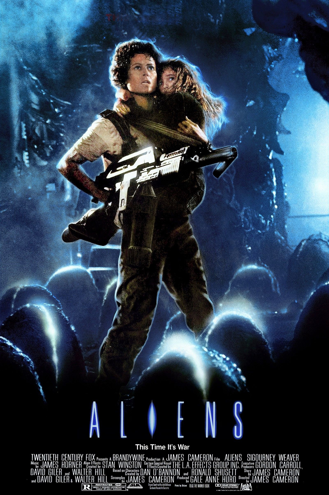

Aliens
After 57 years in hypersleep, Ripley is rescued only to learn that Weyland-Yutani has transformed LV-426, the very planet where her crew first encountered the deadly alien, into a thriving colony with families. When contact with the settlement is lost, the company asks Ripley to go back with a squad of Colonial Marines to investigate. What they discover is far worse than they could have imagined...
Movie Rating: (9.2/10)
Cast Members
- Sigourney Weaver as Ripley
- Michael Biehn as Hicks
- Paul Reiser as Burke
- Lance Henriksen as Bishop
- Bill Paxton as Hudson